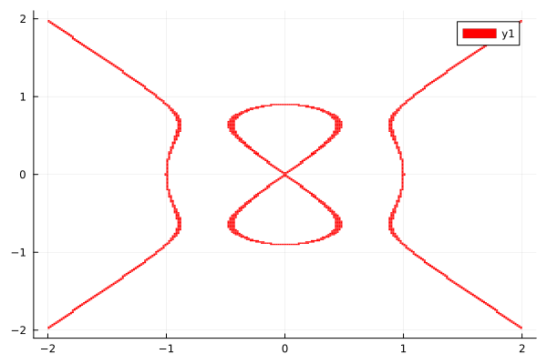

Covering Implicitly Defined Manifolds
Mathematical Background
For a smooth function $h : \mathbb{R}^d \to \mathbb{R}^k$ whose total derivative has full row rank, the set $\left\{ x \in \mathbb{R}^d : h(x) = \mathbf{0} \right\}$ defines a smooth manifold.
One can follow a technique very similar to the root finding technique using Newton's method to obtain an algorithm to cover such implicitly defined manifolds
- subdivision step: The box set
Bis subdivided once, i.e. every box is bisected along one axis, which gives rise to a new partition of the domain, with double the amount of boxes. This is saved inB. - selection step: All boxes whose image under
hdoes not contain $\mathbf{0}$ are removed fromB.
While this is very similar to the root finding algorithm, it differs in that we use a binary search instead of Newton's method to guarantee that the entire manifold is covered. In order to practically realise the selection step, GAIO.jl uses interval arithmetic to obtain a rigorous outer covering of the setwise images of $h$.
GAIO.cover_manifold — Functioncover_manifold(f, B::BoxSet; steps=12)Use interval arithmetic to compute a covering of an implicitly defined manifold $M$ of the form
\[f(M) \equiv 0\]
for some function $f : \mathbb{R}^N \to \mathbb{R}$.
The starting BoxSet B should (coarsely) cover the manifold.
Example
using GAIO
using Plots
# Devil's curve
const a, b = 0.9, 1.0
H((x, y)) = x^2 * (x^2 - b^2) - y^2 * (y^2 - a^2)
domain = Box((0,0), (2,2))
P = BoxPartition(domain)
S = cover(P, :)
M = cover_manifold(H, S; steps=16)
p = plot(M);